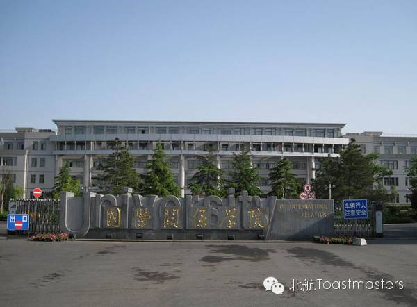
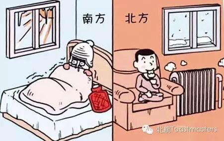

Time: 19:30-21:30,Friday,March,4
Venue:Room F121,New Main Building,Beihang University
Almost
TM Winston
TTM Crystal
Have you ever heard of the saying that some Chinese writer almost got the NobelPrize for literature? Have you ever heard the football commentators sighed that the player almost scored a goal? Have you ever said that “I almost succeed”? How do you think of this kind of saying? Which factors will lead to the “almost”? What’s the philosophy behind the “almost”? Welcome to our meeting this Friday and share your opinion about “almost” with us!
Joy
Special Homework
CC4
Since the first day we entered the school gate we get a new company. Yes, you guessed right! That is homework. So many years have passed, we must have gained some unforgettable memories about homework. This Friday Joy will share with us a special homework. What is special in Joy’s homework? Come here to listen toJoy’s speech!
Bowen
UIR
CC6
In the picturesque northwestern suburb of Beijing locates a small but famousuniversity — University of International Relations. Founded in 1949 and contemporaneous with the People’s Republic of China, UIR ranks the first-class university in China and enjoys privilege of enrollment ahead of other topuniversities, having produced numerous outstanding alumni, including governmentofficials and renowned scholars of international issues. This Friday let’slisten to how Bowen introduces his old school — UIR.

KiKi
Winter in the South
CC6
As a southerner, the first time I came to Beijing I brought three thick quilt to resist the severe cold of the north. However, after living in Beijing for a semester I cannot adapt myself to the winter in the south any longer. If you are a northerner, maybe you cannot understand it. But I won’t make any explanation. Because KiKi will show us the winter in the south in her CC6 speech.

What are Toastmasters?
Toastmasters International (TI)is a nonprofit educational organization that operates clubs worldwide for thepurpose of helping members improve their communication, public speaking, andleadership skills.

https://mp.weixin.qq.com/s/NPZ_edBIuD96zJprjyq0Kw
本页为抢救式本地归档，图文已永久保存。